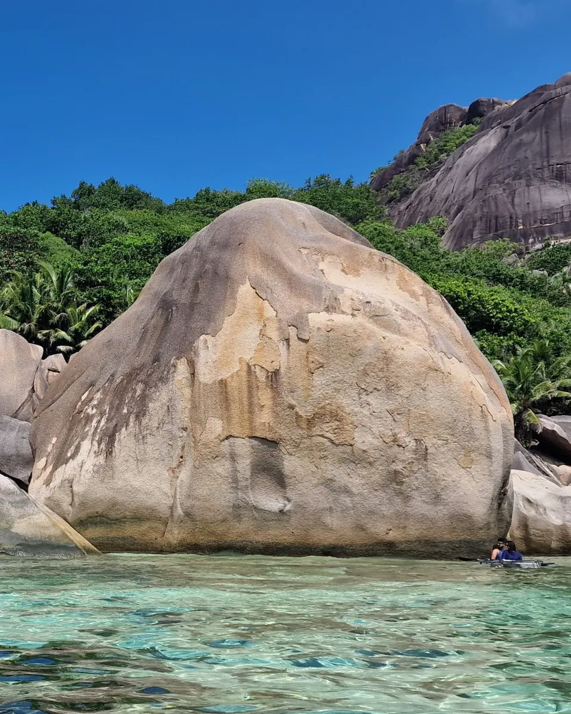
איפה לישון
איפה כדאי לישון בסיישל?
מאהה, פרלין או לה דיג? כל מה שצריך לדעת לפני שבוחרים מלון.
לקריאת המדריך בכתיבהחופשה יוצאת דופן מתחילה בתכנון נכון.
חופים מהיפים בעולם, ריזורטים יוקרתיים וטבע טרופי עוצר נשימה. ב-Gili’s Tours אנחנו מתכננים עבורכם חופשות בהתאמה אישית, עם מלונות נבחרים, תנאים אטרקטיביים וליווי בעברית לאורך כל הדרך.
קבלו הצעה לחופשה בסיישלSeychelles at a glance
115 איים שיוצרים את אחד היעדים הטרופיים המיוחדים בעולם.
Mahé | Praslin | La Digue
7-10 לילות לרוב המטיילים.
אקלים טרופי לאורך כל השנה, עם הבדלים בין העונות בתנאי הים, הרוחות והגשמים.
נמצא באי מאהה (Mahé).
רופי סיישלי (SCR).
קריאולית | אנגלית | צרפתית
היתרון של Gili’s Tours
אנחנו עובדים ישירות מול מלונות, ריזורטים וספקים מקומיים כדי להשיג ללקוחות שלנו תנאים, אפשרויות והטבות שלא תמיד זמינים בהזמנה עצמאית.
מהרגע שמתחילים לתכנן ועד שאתם חוזרים הביתה, יש לכם למי לפנות ובשפה שלכם. אנחנו זמינים עבורכם לפני הנסיעה ובמהלך החופשה, גם כשצריך עזרה בזמן אמת.
לא כל מלון שנראה מדהים בתמונות הוא הבחירה הנכונה. אנחנו בודקים, משווים ובוחרים עבורכם את המלונות, האזורים והחוויות שמתאימים לחופשה שלכם.
לא חבילת מדף ולא מסלול זהה לכולם. אנחנו מתאימים את המלונות, מספר הלילות, האיים והחוויות להרכב הנוסעים, לסגנון ולתקציב שלכם.
מלונות, העברות, מעברים בין האיים, אטרקציות וחוויות. אנחנו מחברים את כל חלקי החופשה כדי שלא תצטרכו לתאם הכול לבד.
את החופשה שלכם אפשר להזמין בהרבה מקומות.
את היתרון של Gili’s Tours מקבלים רק אצלנו.
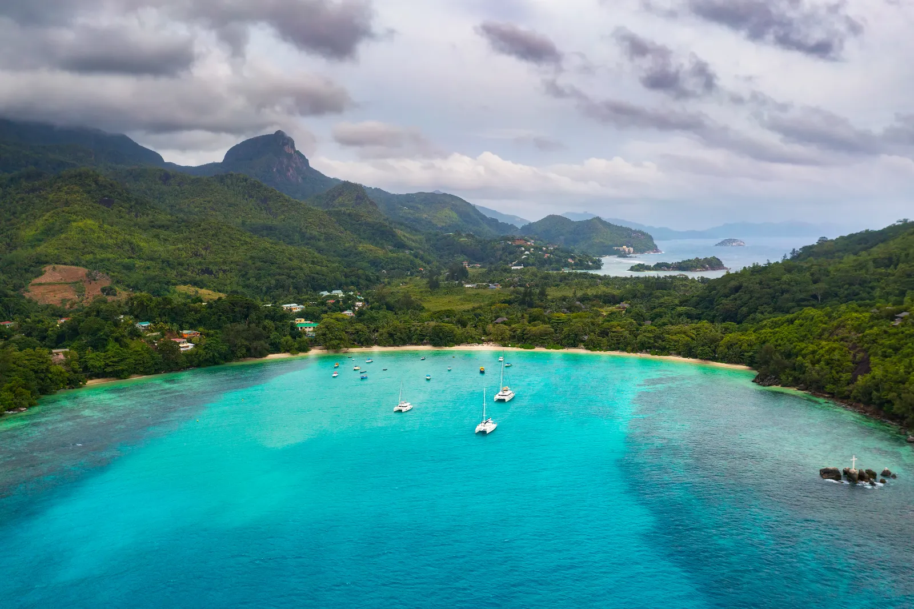
הכירו את איי סיישל
סיישל היא קבוצת איים טרופיים המשלבת חופים לבנים, מי טורקיז, שמורות טבע וריזורטים מהמרשימים בעולם.
שלושת האיים המרכזיים למטיילים הם מאהה, פרלין ולה דיג, כאשר כל אחד מהם מציע חוויה אחרת. אפשר לבחור בחופשה רגועה בריזורט אחד או לשלב כמה איים למסלול מגוון ועשיר יותר.
המלונות והריזורטים הנבחרים שלנו
מבחר ריזורטים יוקרתיים ומלונות בוטיק, שנבחרו בהתאם למיקום, לאיכות האירוח ולסגנונות חופשה שונים. אנחנו נעזור לכם לבחור את המלון הנכון, באי הנכון.
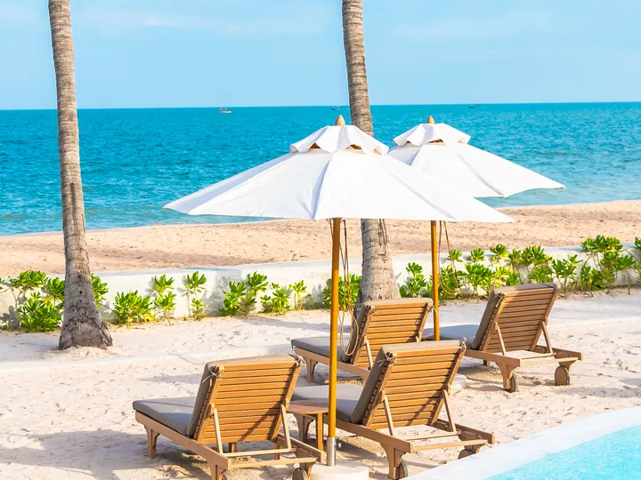
תמונה להמחשהMahé
ריזורט רחב ידיים הממוקם בין שני חופים, עם מגוון מסעדות, ספא ופעילויות. מתאים לזוגות ולמשפחות שמחפשים חופשה ברמה גבוהה.
לפרטי המלון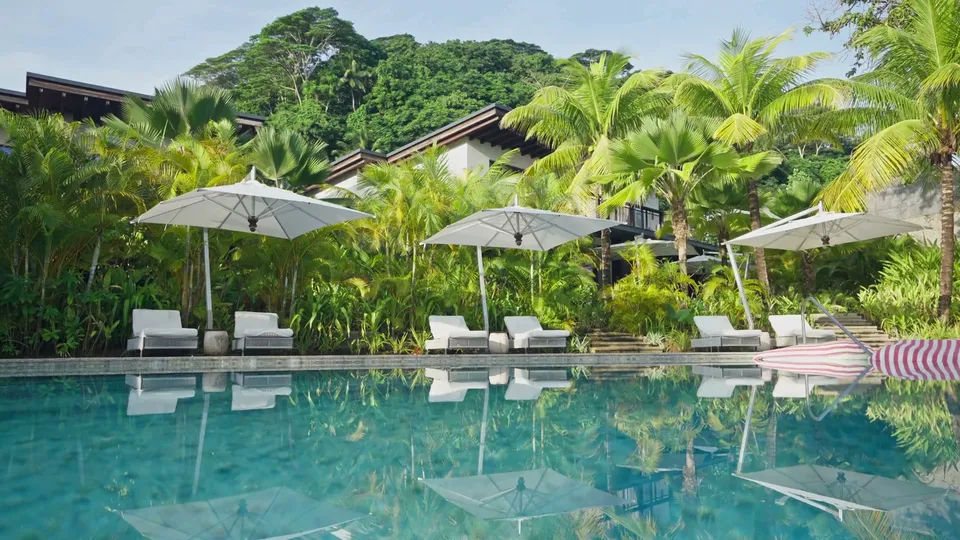
מתוך סרטון המלוןMahé
מלון יוקרה אינטימי בדרום מאהה, עם נוף מרהיב לאוקיינוס ואווירה שקטה. מתאים במיוחד לזוגות ולירח דבש.
לפרטי המלון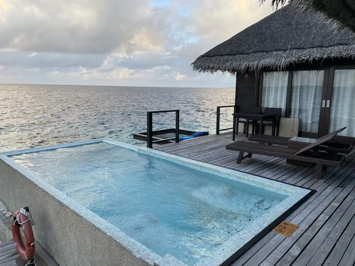
תמונה להמחשהMahé
וילות פרטיות המשתלבות בנוף הטרופי, עם נוף מרהיב למפרץ ואירוח יוקרתי.
לפרטי המלון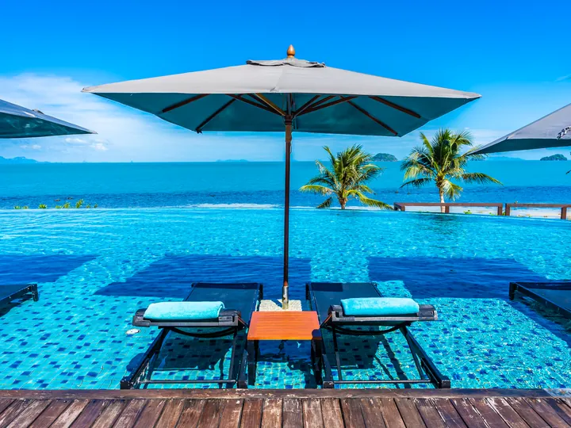
תמונה להמחשהPraslin
ריזורט יוקרתי המוקף בטבע ובחופים יוצאי דופן. מתאים לחופשה רגועה ולשילוב טיולים באי.
לפרטי המלון תמונה להמחשה
תמונה להמחשהPraslin
וילות יוקרתיות עם בריכות פרטיות, נוף לאוקיינוס ואווירה אינטימית.
לפרטי המלון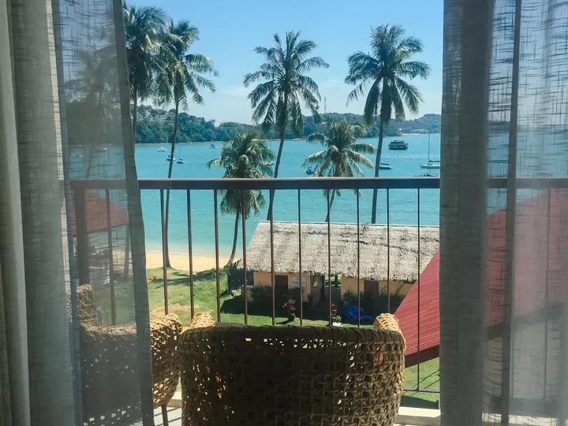
תמונה להמחשהLa Digue
ריזורט טרופי באווירה רומנטית, עם בריכת אינפיניטי וספא, במיקום נוח לטיולים באי.
לפרטי המלוןשלושת האיים המרכזיים

MAHÉ | מאהה
מאהה משלבת חופים מרהיבים, טבע טרופי, מסעדות וריזורטים יוקרתיים. כאן נמצא גם נמל התעופה הבינלאומי.
מתאים למי שרוצה לשלב חופשת ריזורט עם טיולים וגילוי האי.

PRASLIN | פרלין
פרלין ידועה בחופים המפורסמים שלה, בשמורת Vallée de Mai ובגישה נוחה לאיים הסמוכים.
מתאימה למי שמחפש שילוב בין ריזורט מפנק, טבע וחוויות מיוחדות.

LA DIGUE | לה דיג
אי קטן וקסום, המפורסם בסלעי הגרניט, בחופים ובאווירה הרגועה שלו. כאן מתניידים בעיקר באופניים ונהנים מחוויה שונה משני האיים הגדולים.
לא חייבים לבחור רק אי אחד. אנחנו נתאים עבורכם את השילוב הנכון בין האיים, בהתאם לאורך החופשה ולסגנון שלכם.
המסלול המומלץ שלנו לסיישל
מסלול המשלב את שלושת האיים המרכזיים, ריזורטים נבחרים, חופים, שמורות טבע וחוויות מיוחדות.
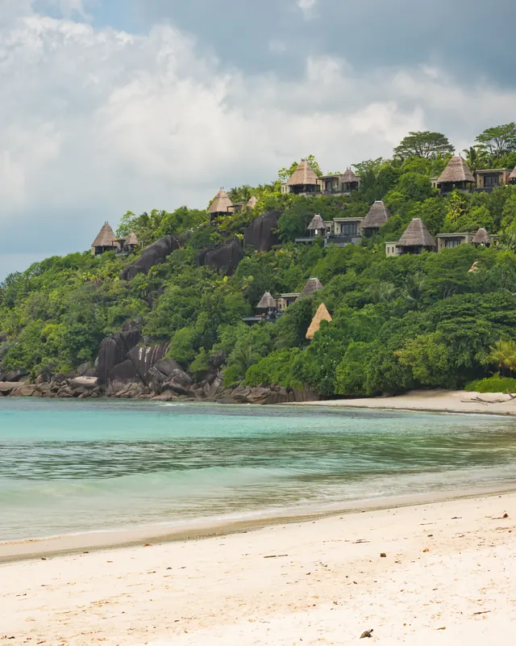
ימים 1-3 | MAHÉ
נחיתה בסיישל והעברה למלון Constance Ephélia. שלושה ימים המשלבים חופים, בריכות, ספא והיכרות עם האי. אפשר לשלב שייט בפארק הימי Sainte Anne וביקור בויקטוריה.
מלון: Constance Ephélia
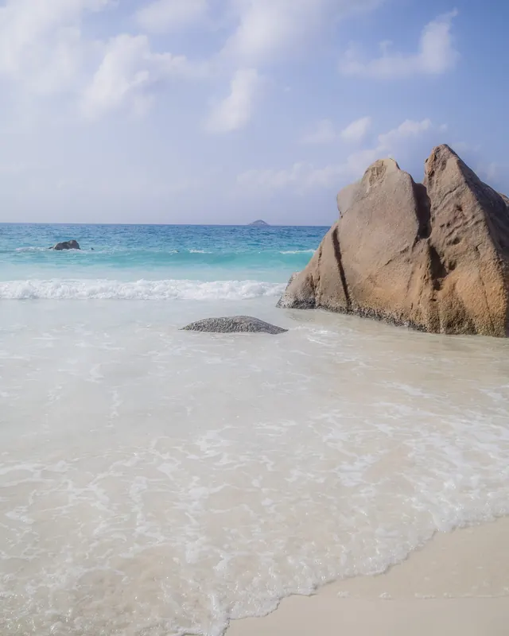
ימים 4-6 | PRASLIN
מעבר לפרלין באמצעות טיסה פנימית או מעבורת. במהלך השהות אפשר לשלב שייט ל-Curieuse ול-St. Pierre, ביקור בשמורת Vallée de Mai וחוף Anse Lazio.
מלון: Constance Lemuria
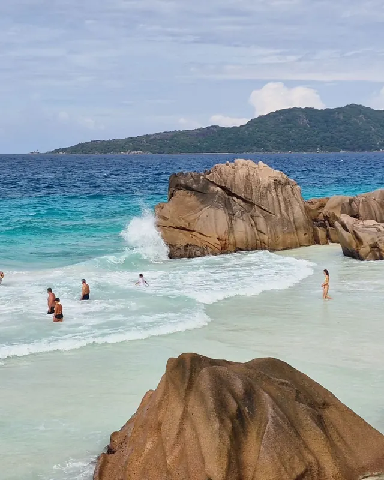
ימים 7-9 | LA DIGUE
הפלגה קצרה מפרלין ללה דיג. ימים של רכיבה על אופניים, חופים טרופיים, ביקור ב-Anse Source d’Argent ואפשרות לחוויית Crystal Kayak.
מלון: Le Domaine de L’Orangeraie
יום 10 | חזרה למאהה
מעבר למאהה לקראת הטיסה הבינלאומית, בהתאם ללוחות הזמנים ולזמינות המעברים.
המסלול המוצג הוא דוגמה לחופשה בסיישל. חלוקת הלילות, המלונות והמעברים תותאם באופן אישי, לרבות מרווחי זמן בטוחים לקראת הטיסה הבינלאומית.
קבלו הצעה למסלול הזהלמי מתאימה חופשה בסיישל?
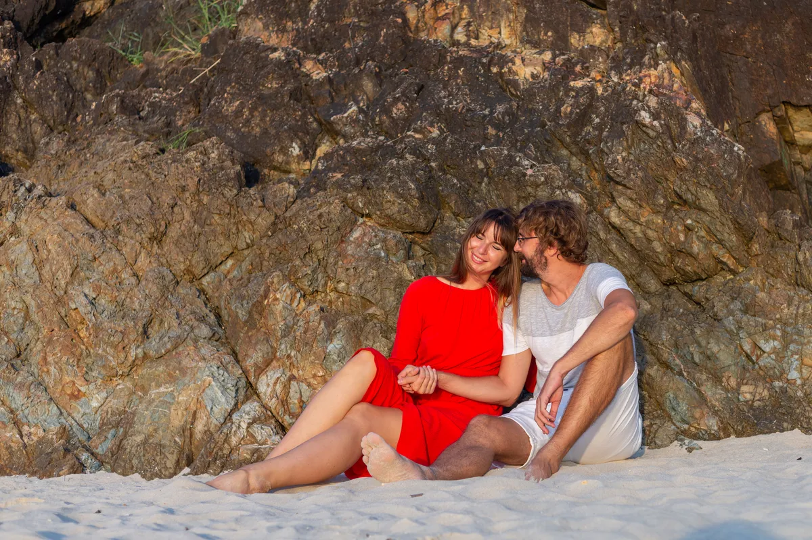
וילות פרטיות, ריזורטים רומנטיים, חופים שקטים וחוויות זוגיות מיוחדות.
לחופשות ירח דבש העמוד בהכנה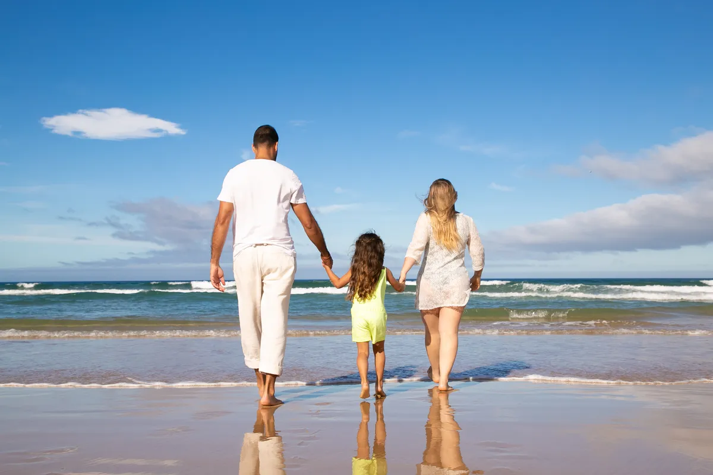
ריזורטים עם חדרים המתאימים למשפחות, בריכות, מועדוני ילדים ופעילויות לכל הגילים.
לחופשות משפחתיות העמוד בהכנהריזורטים יוצאי דופן, וילות פרטיות, ספא ואירוח ברמה גבוהה.
לחופשות יוקרה העמוד בהכנההחוויות שאסור לפספס בסיישל
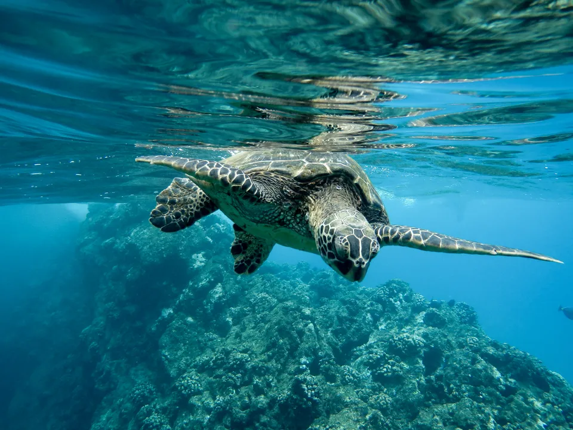
צבי ענק, שייט ושנורקלינג
טיול יום מפרלין המשלב מפגש עם צבי ענק, טבע ושנורקלינג באזור St. Pierre.
אחד החופים האייקוניים בעולם
חוף מפורסם בלה דיג, עם סלעי גרניט עצומים, חול לבן ומים צלולים.
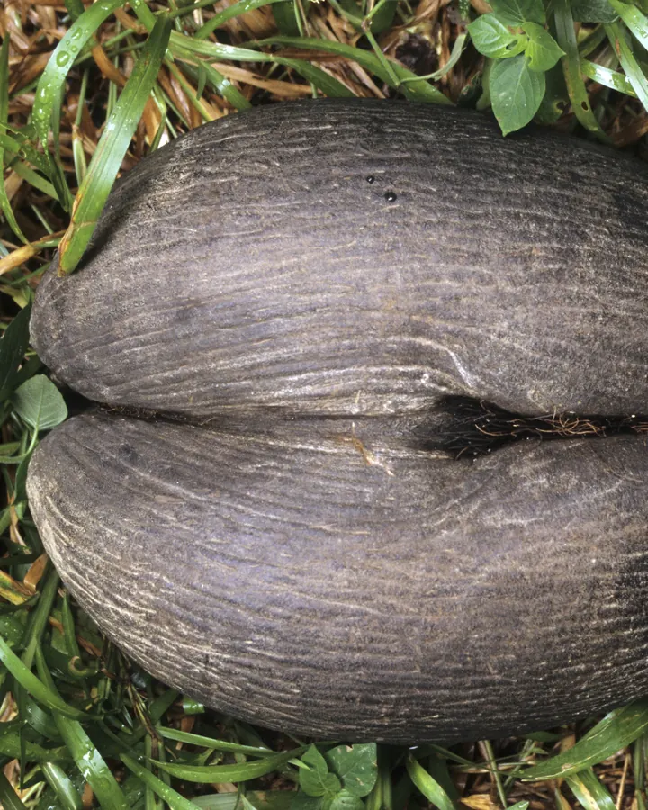
שמורת הטבע המפורסמת של פרלין
אתר מורשת עולמית של אונסק״ו, שבו גדל עץ ה-Coco de Mer הייחודי לסיישל.

סיישל מהים
שייט בין איים קטנים, שחייה ושנורקלינג במים הטרופיים.
מתי כדאי לטוס לסיישל?
סיישל נהנית מאקלים טרופי לאורך השנה, אך תנאי הרוח, הים והגשמים משתנים בין העונות.
תקופת מעבר עם רוחות מתונות יחסית, המתאימה למגוון פעילויות ימיות.
תקופה יבשה ורוחית יותר, שבה חשוב להתחשב במיקום המלון ובתנאי החופים.
תקופת מעבר נוספת, שלרוב מציעה תנאי ים נוחים יחסית.
תקופה חמה ולחה יותר, עם סיכוי מוגבר לגשמים טרופיים.
ההמלצה שלנו: בסיישל לא בוחרים מלון רק לפי התמונות. גם העונה והמיקום שלו על האי משפיעים על החופשה.
הטיפ של Gili’s Tours
בחופשה של 7-10 לילות לא תמיד כדאי לשלב את כל שלושת האיים. לפעמים חלוקה נכונה בין שני איים תאפשר לכם ליהנות יותר מהמלונות, מהחופים ומהחוויות, בלי להעמיס מעברים מיותרים.
אנחנו נתאים את מספר האיים והלילות לחופשה שלכם, ולא להפך.
המלצת צוות Gili’s Tours
המלצות הלקוחות שלנו
חמש שנות פעילות ואלפי מטיילים שבחרו ב-Gili’s Tours.
כאן תוצג המלצה אמיתית של לקוחות שחזרו מסיישל, בטקסט המקורי שלהם.
כאן תוצג המלצה אמיתית של לקוחות שחזרו מסיישל, בטקסט המקורי שלהם.
כאן תוצג המלצה אמיתית של לקוחות שחזרו מסיישל, בטקסט המקורי שלהם.
מקום שמור: נציג רק המלצות אמיתיות על סיישל, עם שם, יעד ותמונה באישור הלקוח.
שאלות נפוצות על סיישל
לרוב נמליץ על 7-10 לילות, בהתאם למספר האיים ולסגנון החופשה. מי שמעוניין לשלב שלושה איים יכול להרוויח משהות ארוכה יותר.
בהחלט אפשר. שילוב בין מאהה, פרלין ולה דיג מאפשר להכיר צדדים שונים של סיישל. עם זאת, לא בכל חופשה חייבים לבקר בשלושתם.
בין מאהה לפרלין ניתן לעבור בטיסה פנימית או במעבורת. בין פרלין ללה דיג פועלות מעבורות.
כן. יש בסיישל ריזורטים המציעים חדרים משפחתיים, מועדוני ילדים ופעילויות המתאימות למשפחות.
במאהה ובפרלין רכב יכול להיות שימושי למי שמעוניין לטייל עצמאית. בלה דיג נהוג להתנייד בעיקר באופניים.
חשוב לבדוק את תנאי הכניסה, אישור הנסיעה, דרישות המסמכים ולוחות הזמנים של המעברים בין האיים.
המדריך שלנו לסיישל
מדריכים, המלצות וטיפים שיעזרו לכם לבחור את האיים, המלונות והחוויות המתאימים לחופשה שלכם.

איפה לישון
מאהה, פרלין או לה דיג? כל מה שצריך לדעת לפני שבוחרים מלון.
לקריאת המדריך בכתיבה
מסלולים
איך משלבים בין האיים, כמה לילות כדאי להקדיש לכל מקום ומה אסור לפספס.
לקריאת המדריך בכתיבה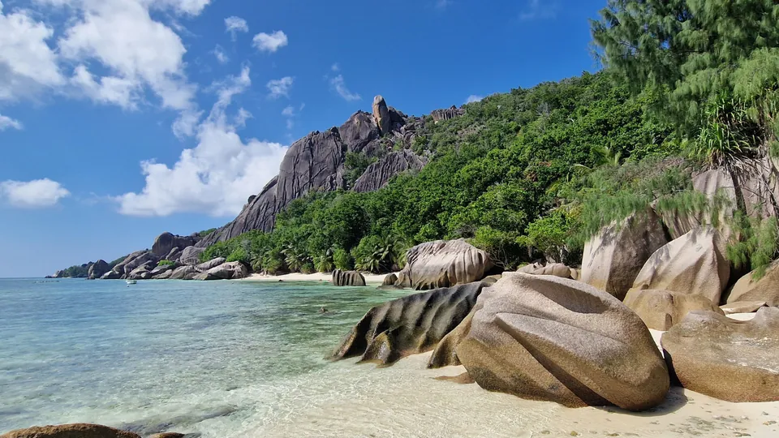
ירח דבש
ריזורטים רומנטיים, וילות פרטיות ומלונות יוקרה לחופשה זוגית.
לקריאת המדריך בכתיבה
עונות
מדריך עונות וחודשים שיעזור לכם לבחור את התקופה המתאימה.
לקריאת המדריך בכתיבהמשפחות
האיים, המלונות והחוויות המתאימים לחופשה משפחתית.
לקריאת המדריך בכתיבהתקציב
מה משפיע על המחיר, איך לבחור מלון ואיך לתכנן את התקציב.
לקריאת המדריך בכתיבהSummer all year
מלונות וריזורטים נבחרים, תנאים אטרקטיביים, תכנון אישי וליווי בעברית לאורך כל הדרך.
ספרו לנו מתי תרצו לטוס, עם מי ומה חשוב לכם בחופשה. אנחנו נדאג לחבר את הפרטים לחופשה אחת שמתאימה לכם.